/pilot section 5, After the pilot: the details pass
Will picked B on 30 Oct 2026. Four details drawn three ways from the section's own component; option 1 of each is what is built now. Detail 5, the heading ("One job first. Then the system."), is kept unless a line test is wanted.
Detail 1 of 5, the stages beside the dashboard
1, as built: Day 14, Day 30, within 60 days, the list about the dashboard's height (recommended: day 30's $200 is the fact the section was missing, and it stays a stage)
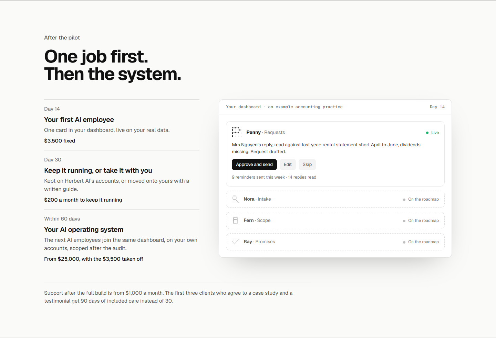
2, four: support after the build as a fourth stage, Kept running from $1,000 a month; the first three alone in the line under; the list runs taller than the dashboard
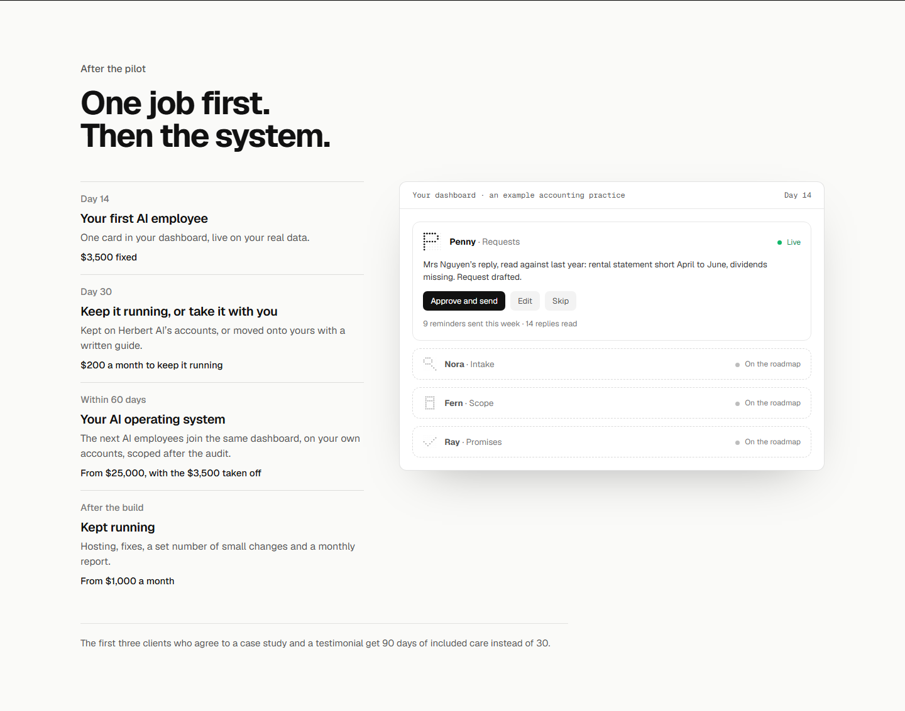
3, two: Day 14 and the AI operating system; day 30's choice drops into the line under, which gets long
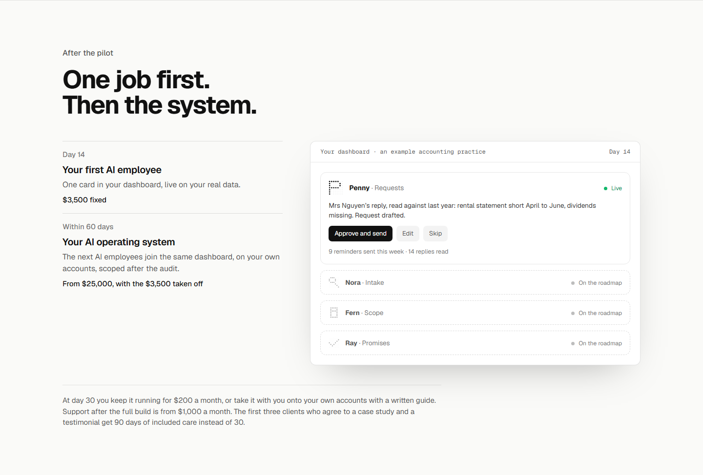
Detail 2 of 5, what the dashboard shows
1, as built: Penny live with a request waiting, Nora, Fern and Ray queued as On the roadmap
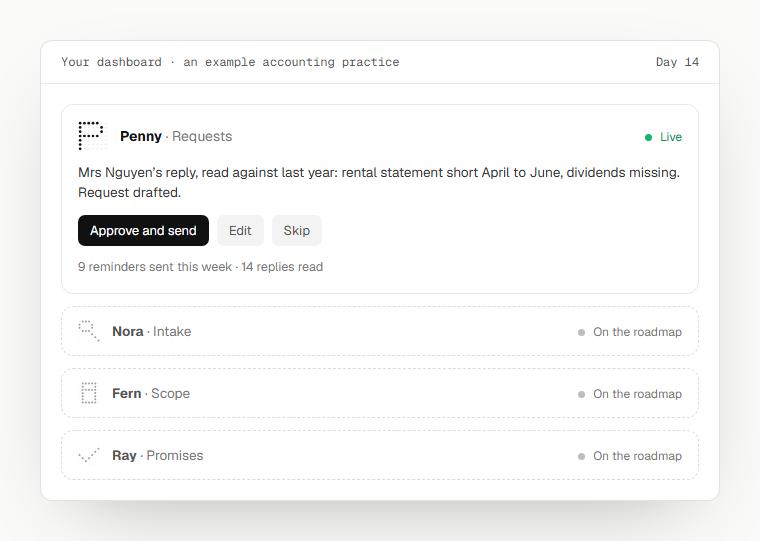
2, each queued card says its job in a line, taken from the homepage roster (recommended: On the roadmap reads as names until it says what they would do)
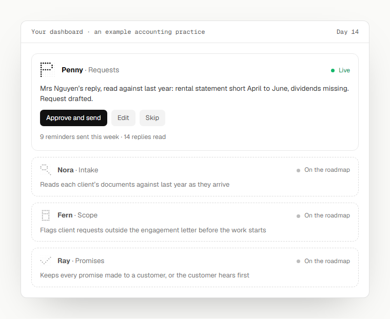
3, a second card live: Penny and Nora both working, Fern and Ray queued, no Day 14 in the bar
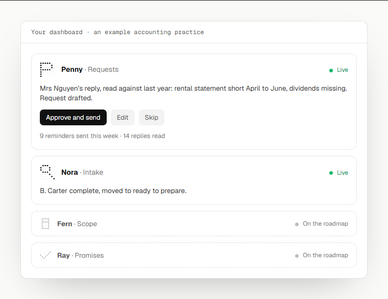
Detail 3 of 5, the line under
1, as built: support after the full build from $1,000 a month, and the first three
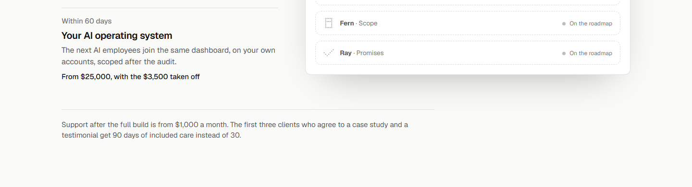
2, support moves into the third stage's price; the first three alone under (recommended: each price sits with its stage, as the timeline does)
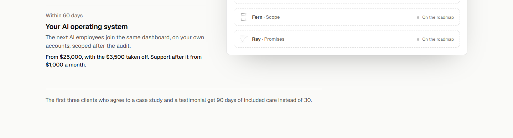
3, no line: support in the third stage, and the first three left to /pricing
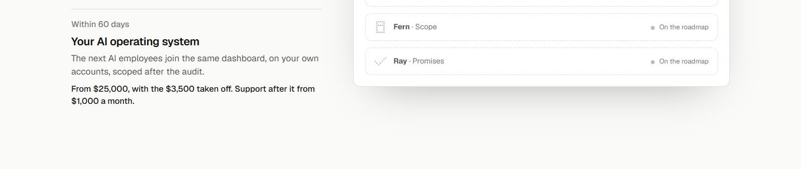
Detail 4 of 5, the phone order
1, as built: the three stages, then the dashboard
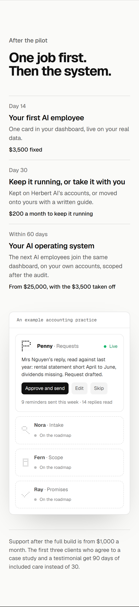
2, the dashboard first, then the stages
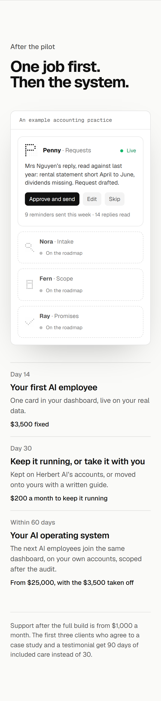
3, the dashboard after Day 14, beside the line that says one card in your dashboard (recommended: the picture lands where the line names it, not three blocks later)